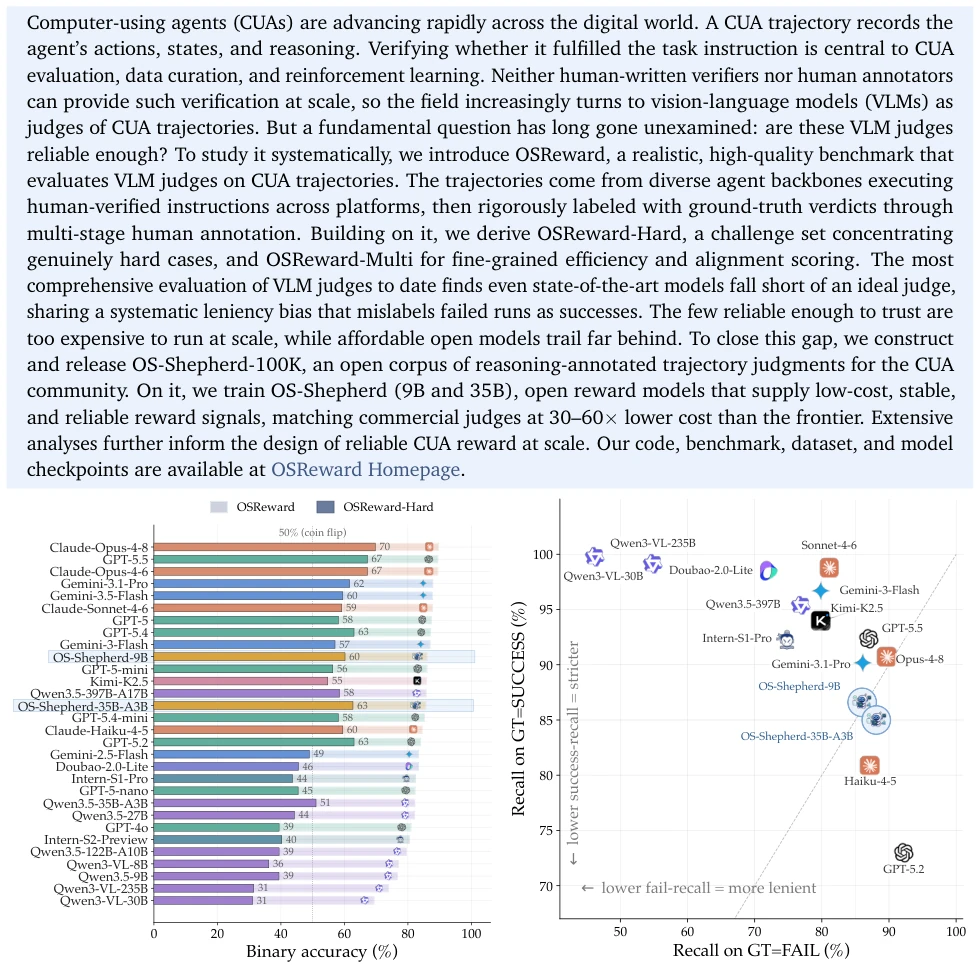
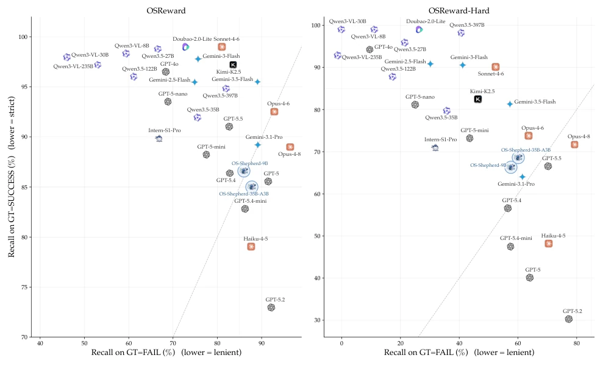
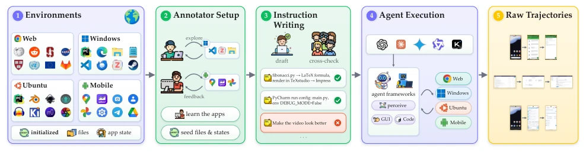
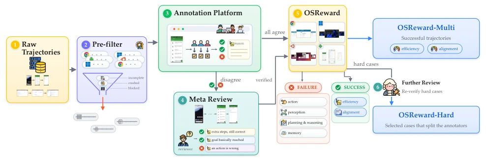
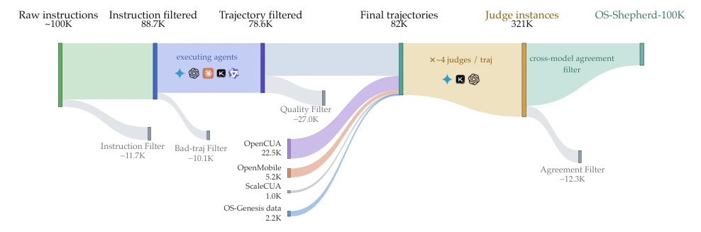
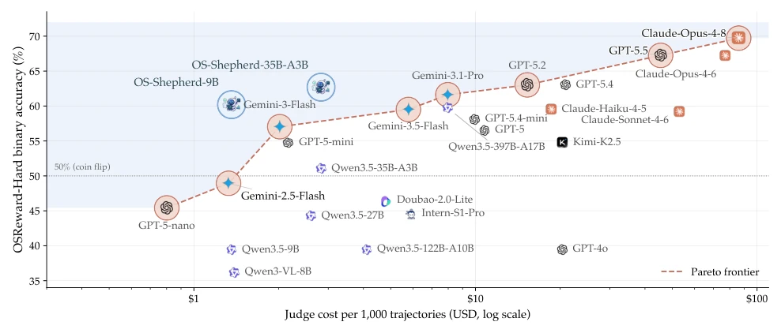
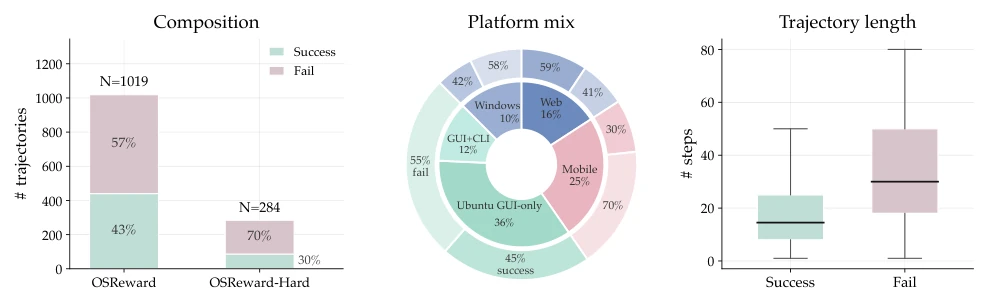
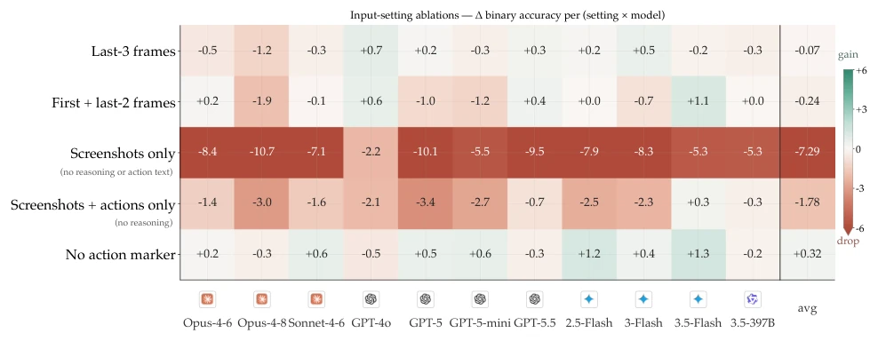
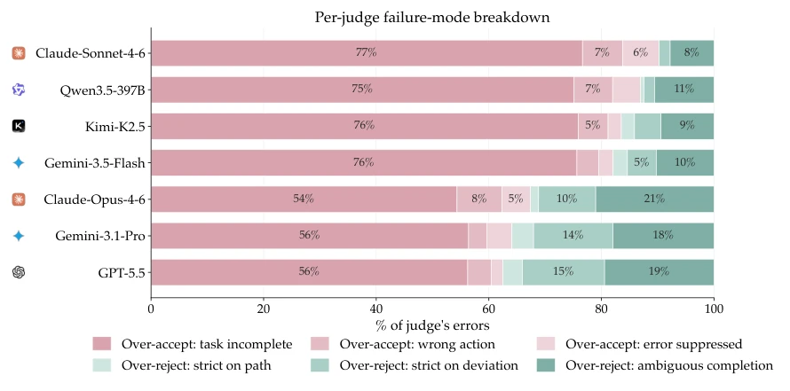
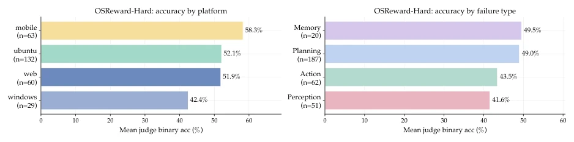

This paper pours cold water on the "referee system" of Embodied AI. It was widely believed that VLMs as referees could handle CUA evaluation, yet OSReward testing revealed that most models were "making false claims with eyes open," particularly failing collectively when facing false positives where Agents pretended to complete tasks. Although OSReward constructed a cross-platform gold standard dataset, the most ironic aspect is that usable top-tier models are prohibitively expensive, while open-source ones are too weak. OS-Shepherd attempts to train a cost-effective Reward Model using 100K data, saving some funds for the academic community, but essentially it still trades data for performance without resolving the fundamental hallucination problem of VLMs as referees. This work acts like a strict auditor, exposing the industry's "self-indulgent" evaluation system, yet the solution still relies on accumulating data and compute power, offering no magic.
研究动机Motivation
CUA 的进化离不开可靠的 Reward Signal，但现有评估体系漏洞百出。人类标注无法规模化，人工编写的 Verifiers 又只能覆盖少量任务，导致业界转向 VLM 作为 Judge (Zheng et al., 2023a; Chen et al., 2024)。然而，现有研究多基于单一平台或复用现有基准的轨迹 (Lin et al., 2025; Li et al., 2026)，这些轨迹往往带有 rollout 设置带来的噪声，且标签可能来自不完美的 Verifiers (Xie et al., 2025)。更严重的是，跨平台环境下 Agent 的 Action Space 和任务复杂度差异巨大，复用数据会导致 Judge 评估偏差。目前缺乏一个能衡量 VLM Judge 本身可靠性的标准化基准，导致训练和评估中使用的 Reward 信号质量参差不齐，甚至可能误导 RL 优化方向。因此，亟需构建一个跨平台、人工金标准验证的基准，以量化并解决 Judge 的可靠性问题。
The evolution of CUA relies on reliable Reward Signals, yet existing evaluation systems are riddled with loopholes. Human annotation is not scalable, and manually written Verifiers cover only a limited number of tasks, prompting the industry to adopt VLMs as Judges (Zheng et al., 2023a; Chen et al., 2024). However, existing studies mostly rely on single platforms or reuse trajectories from existing benchmarks (Lin et al., 2025; Li et al., 2026); these trajectories often contain noise introduced by rollout settings, and labels may originate from imperfect Verifiers (Xie et al., 2025). More critically, in cross-platform environments, the Action Space and task complexity of Agents vary significantly, and reusing data leads to evaluation bias in Judges. Currently, there is a lack of a standardized benchmark to measure the reliability of VLM Judges themselves, resulting in inconsistent quality of Reward signals used in training and evaluation, which may even mislead RL optimization directions. Therefore, there is an urgent need to construct a cross-platform benchmark verified by human gold standards to quantify and address the reliability issues of Judges.

Figure 1: How well VLM judges score CUA trajectories (a), and the strict–lenient bias they share (b).

Figure 6: Judge bias on OSReward (left) and OSReward-Hard (right). Judges below the diagonal skew lenient; most of the field sits there, and the skew widens on the hard set.
The overall workflow is divided into two stages: data construction and model training. First, construct the OSReward benchmark: establish cross-platform infrastructure (Web, Windows, Ubuntu, Mobile), initializing real application environments and user states. Annotators write grounded instructions, which are filtered via peer cross-check. Agents execute instructions to generate trajectories, which undergo automatic pre-filtering before entering human annotation. Annotation employs a triple-blind review plus meta-review mechanism to ensure the reliability of Gold Verdicts. The dataset is categorized into Full Set, OSReward-Hard (focusing on hard cases), and OSReward-Multi (fine-grained alignment and efficiency scoring). Second, construct the OS-Shepherd model: based on OSReward findings, build the OS-Shepherd-100K reasoning annotation corpus, encompassing 100K samples after filtering 300K+ instances. A two-stage training strategy is adopted: first establishing accurate judgment capability, then specifically correcting "false success" bias. Training data includes failure type annotations, enabling the community to advance open CUA reward research based on this. Finally, 9B and 35B open-source Reward Models are released, aiming to provide low-cost, stable reward signals.

Figure 3: From realistic environments to raw trajectories: annotators prepare the environments and write grounded instructions on them, agents from four model families execute the instructions.

Figure 4: The annotation pipeline. Each pre-filtered trajectory is labeled by three independent annotators; disagreements go to meta review, and the verified gold set is read as three views

Figure 10: The OS-Shepherd-100K pipeline: self-collected and open-source trajectories are ensemble- judged and distilled into the training set. Band widths ∝trajectory counts.
Evaluated 27 VLM Judges on OSReward. Metrics include Binary Accuracy, sRec, fRec, and Balanced Accuracy. Results indicate that top-tier models achieved nearly 90% accuracy on the Full Set, but dropped below 70% on OSReward-Hard, averaging only 52%. The primary finding is that Judges generally exhibit a "Leniency Bias," tending to accept trajectories where Agents claim completion without truly succeeding. Ablation analysis reveals that text history (Thought & Action) impacts judgment far more than screenshots (Drop text loss 7.2%). Cost analysis demonstrates that reliable Judges are costly; OS-Shepherd reduces costs by 30-60 times while maintaining performance comparable to commercial models. OSReward-Multi indicates Judges perform weaker on fine-grained scoring, where AUC is acceptable but threshold calibration is poor.

Figure 2: Cost against binary accuracy on OSReward-Hard: reliable judges are expensive, and the OS-Shepherd models come nearest their accuracy at a fraction of the cost.

Figure 5: OSReward at a glance: outcome composition of the full and Hard sets, platform mix, and trajectory length; failed runs are markedly longer.

Figure 9: Overview of input ablations: Δ binary accuracy per (setting × model) vs. the main setting.
其他图片Other Figures

Figure 7: Per-judge error composition, seven representative judges: over-accepting an incomplete task (warm colors) dominates every family.

Figure 8: Mean per-judge binary accuracy on OSReward-Hard, by platform and by failure type. Failure types are multi-label, so their counts sum to more than the number of failed trajectories.